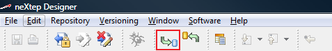
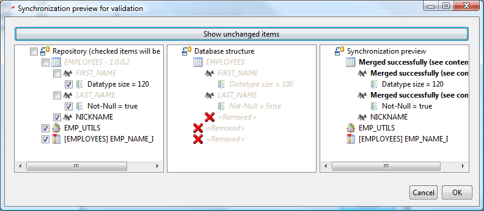
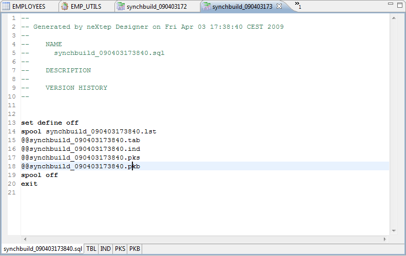
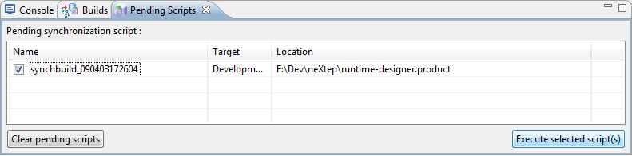

This is the default synchronization method. This synchronization will adapt your development database to the current view's contents.
The synchronization is always available in the main toolbar of neXtep designer. You simply have to click this button to start a synchronization to your development environment. The command is always available on the main toolbar :

When you start a synchronization, the system first loads the target database structure and then compares it with the current view's contents. Once this is done, a synchronization preview dialog comes up to display the changes which need to be made to the target database.

In this dialog you can tell the SQL generator which objects to generate and which objects to leave in place. When you validate this dialog, the SQL-generation engine will generate the SQL code corresponding to the checked items of the preview dialog.
The result of a repository to database synchronization will be a SQL script.
Once validated, the generated SQL script is not automatically submitted to the target database (although you can say so by editing synchronization properties). Instead, the SQL script is opened in a new SQL-editor for you to review / alter it before submitting to the target database. Such a script is tagged as Pending as we are about to submit it to our target database.
You can retrieve all pending synchronization scripts in the Pending Scripts view at the bottom of your neXtep environment.
Here is the generated SQL script you see when you validate the above synchronization dialog :

This is an example of an Oracle generation. The MySQL generation creates a single flat SQL file containing all SQL statements whereas the Oracle generator takes advantage of some SQL*Plus directives to split the resulting scripts by type and creates an entry-point wrapper script.
Note that after the synchronization, the Pending Script view is shown with the current script listed. When you have reviewed the generated SQL script, you only have to check the script in the list and click generate selected scripts.

The generation console will appear to provide output from the database default command-line client invoked with the generated script.